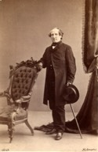
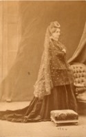

Beaubien-Perrault-Benington - Family Card
Beaubien-Perrault-Benington - Family Card
Hon. Andrew Stuart(25 Nov 1785 - 21 Feb 1840)Philippe Joseph Aubert De Gaspé(30 Oct 1786 - 29 Jan 1871)
Marguerite Dumoulin(20 Jul 1781 - 3 Apr 1838)Susanne Allison(abt 1795 - 13 Aug 1847)
m. 8 Jun 1842, Québec, Québec

b. 16 Jun 1812, Québec, Québec
d. 9 Jun 1891, Québec, Québec
br. 12 Jun 1891, St. Patrick’s, Québec, Québec
occ. avocat, juge, seigneur
edu.
rel.
Flags.

b. 5 May 1817, Québec, Québec
d. 8 Mar 1899, Montréal, Québec
br.
occ.
edu.
rel.
Flags. Beaubien
Children
Henry MacNab Stuart(3 May 1843 - 30 Jul 1889)
> Suzanne Lauretta Stuart(20 Sep 1844 - 27 Feb 1936)
Andrew Charles Stuart(15 Jul 1846 - 11 Mar 1883)
Sophia Alma Stuart(20 Apr 1848 - 20 Jul 1926)
Maud Margaret Stuart(13 Jan 1850 - 18 Mar 1898)
John Porter Stuart(15 Jan 1852 - 14 Dec 1853)
James De Gaspé Stuart(11 Dec 1853 - 28 Oct 1892)
Gustavus George Stuart KC(3 May 1855 - 11 Jun 1918)
Elmire Ida Stuart(27 Jul 1858 - 25 Dec 1860)
Mary Grace (May) Stuart(13 Apr 1862 - 28 Mar 1960)